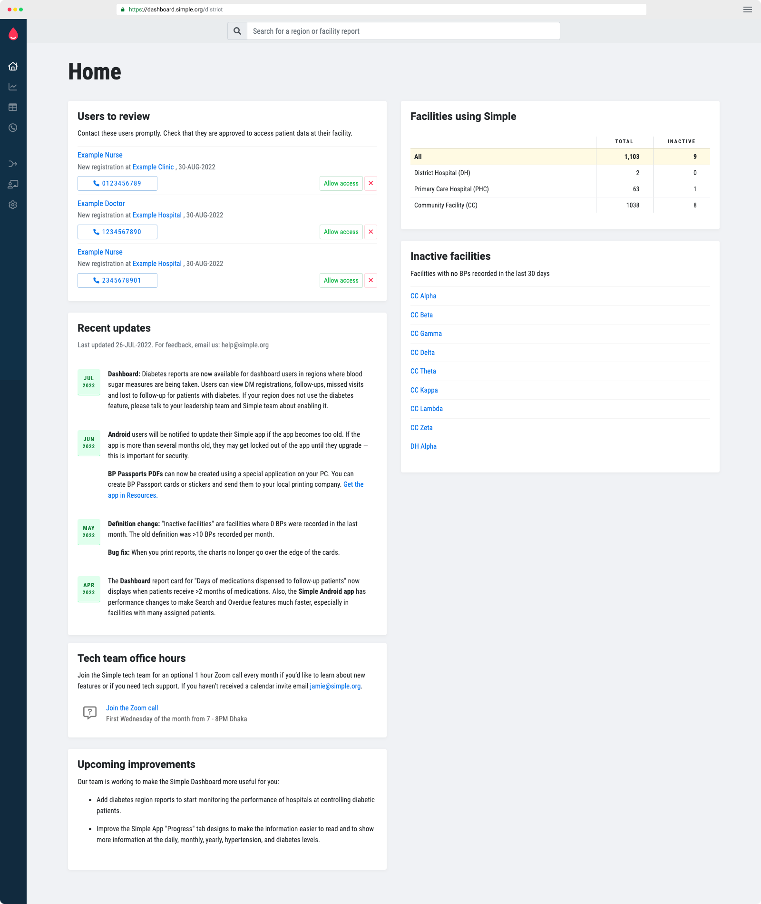

Simple app for healthcare workers: Android
Introduction
New users are presented with an optional 5 minute training video before starting to use Simple.
Home screen
The main screen of the app. Search for patients, scan BP Passports, and quickly look up recent patients.
Scan "BP Passport"
Patients are given a paper ID called a BP Passport. Scan the QR code to immediately see the correct patient in Simple.
Patient summary
The main screen for a patient showing their longitudinal health record. Healthcare workers add BPs and medications.
Add BP measure
Manual entry of a blood pressure of a patient. By default, BPs are for "today" but users can back-date entries by tapping the date.
Choose medications
Protocol medications and other common BP medication are pre-loaded by default. These are custom per region. Users can optionally enter any other medication by typing out the name.
Choose medication dosage
Protocol and common medications have pre-loaded default values, so a user can tap-tap and be finished quickly.
Custom medication
Users can enter any medication by typing it in.
Schedule next visit
At the end of each encounter, users schedule the next visit date. Patients who miss visits are prompted with an SMS reminder and then are added to an "Overdue" list for follow-up by a healthcare worker.
Search results
When patients don't have a BP Passport, users search manually and disambiguate to choose the right patient.
Register a new patient
Simple asks for the minumum number of fields possible to confidently ID a patient in the future. In places we ID systems we would ask for state ID, health ID, etc.
Medical history
During registration, healthcare workers enter a minimum of necessary cardiovascular history questions about the patient.
Overdue contact list
Call overdue (defaulted) patients to have them return to care. Calls are routed through an anonymization service so patients don't see nurses' phone numbers.
Overdue call results
After calling a patient, the user marks the result of the call.
Progress overview
The progress tab shows statistics for this facility, to encourage healthcare workers in their work.
Simple dashboard for managers: Web-based
Dashboard home

Managers can oversee new health worker requests, access data for all districts, see recent Simple updates and find tech team office hours.
Dashboard district view for hypertension
Oversee hypertension control rates, registrations, missed visits, population coverage, lost-to-follow-up rates and compare facility performance.
Dashboard district view for diabetes
Oversee diabetes control rates, registrations, missed visits, population coverage, lost-to-follow-up rates and compare facility performance.
Dashboard overdue patients list
A line list of patients that are overdue for their appointment.
{kind=link}
{kind=link}
{kind=link}
{kind=link}
{kind=link}
{kind=link}
{kind=link}
{kind=link}
{kind=link}
{kind=link}
{kind=link}
{kind=link}
{kind=link}
{kind=link}
{kind=link}
{kind=link}
{kind=link}
{kind=link}
{kind=link}